30分钟搞定 Jenkins CI
你想在本地设置中使用 Jenkins CI 进行实验吗？在本文中，我们将设置一个本地 Jenkins CI 服务，为一个简单的 Spring Boot Maven 项目创建一个构建工作，并将创建的 Docker 镜像推送到 DockerHub。这将是一个本地实验的设置，但如果你想尝试一个 Jenkins 插件，它会非常方便。
1.先决条件
开始之前，我们需要以下先决条件：
- 我们使用了 Ubuntu 18.04；
- 必须安装 Docker，有关安装说明，请参见此处；
- 我们需要在 Docker registry 来推送我们的 Docker 镜像。最简单的方法是在DockerHub上创建一个帐户。你可以免费创建帐户。也不会收到垃圾广告邮件；
- 构建工作的 Spring Boot 应用程序。我们将使用前一篇文章中的 Spring Boot MVC 应用程序。源代码可以在GitHub上找到，相应的Docker图像可以在DockerHub上找到。该应用程序包含
http://localhost:8080/hello上的一个 HTTP 端点，并只返回一条Hello Kubernetes欢迎消息。
2.运行 Jenkins CI
我们将使用 Jenkins CI Docker 官方镜像运行 Jenkins 服务。完整的文档可以在这里找到。用以下命令启动容器:
$ docker run -p 8080:8080 --name myjenkins -v jenkins_home:/var/jenkins_home -v jenkins_downloads:/var/jenkins_home/downloads jenkins/jenkins:lts
让我们来仔细看看我们正在做什么:
- -p 8080:8080：我们将内部 Jenkins 端口（冒号后）映射到外部端口，该端口可从我们的 Docker 主机访问；
- –name myjenkins：我们为容器提供一个名称；否则，Docker将为你生成一个名称。最好给它起个名字；这样，你可以轻松地启动和停止容器；
- -v jenkins_home:/var/jenkins_home：我们希望将内部 Jenkins 主目录(冒号之后)映射到 Docker 主机上的一个目录。通过这种方式，Jenkins 数据将被保存在我们的主机上，这让我们有机会备份数据；
- -v jenkins_downloads:/var/jenkins_home/downloads：我们需要在Jenkins中安装额外的工具； 因此，我们创建一个目录来复制
*.tar.gz文件。在这篇文章的后面，我们将清楚地知道我们将使用目录做什么； - jenkins/jenkins:lts：要使用的 Docker 镜像。我们将使用 LTS 版本，但如果你愿意，也可以使用不太稳定的版本。在撰写本文时，v2.150.1 是 LTS 版本。 在此之后，你可以通过其名称停止和启动容器：
$ docker stop myjenkins
$ docker start myjenkins
3.配置 Jenkins 以供首次使用
一旦容器启动后，我们就可以访问 Jenkins Web 控制台了。当然，我们需要知道 Jenkins 实例的 IP 地址。因此，请执行以下命令：
$ docker inspect myjenkins
这将显示一些 JSON 输出。转到该 Networks 部分，参数 IPAddress 显示我们的 Jenkins IP 地址（在我们的例子中为172.17.0.3）：
"Networks": {
"bridge": {
"IPAMConfig": null,
...
"IPAddress": "172.17.0.3",
...
"DriverOpts": null
}
}
Jenkins Web 控制台可通过浏览器访问 http://172.17.0.3:8080/。
这将向我们显示以下页面：
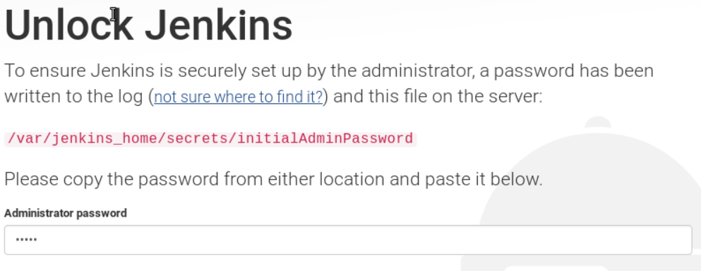
我们使用临时密码，启动容器后在控制台输出中显示:
*************************************************************
*************************************************************
*************************************************************
Jenkins initial setup is required. An admin user has been created and a password generated.
Please use the following password to proceed to installation:
f586346583e04fa78e2cc8edbf7566e1
This may also be found at: /var/jenkins_home/secrets/initialAdminPassword
*************************************************************
*************************************************************
*************************************************************
输入临时密码后，将显示一个页面，在这里我们可以选择要安装的默认插件集或自定义插件集。我们将选择默认设置。
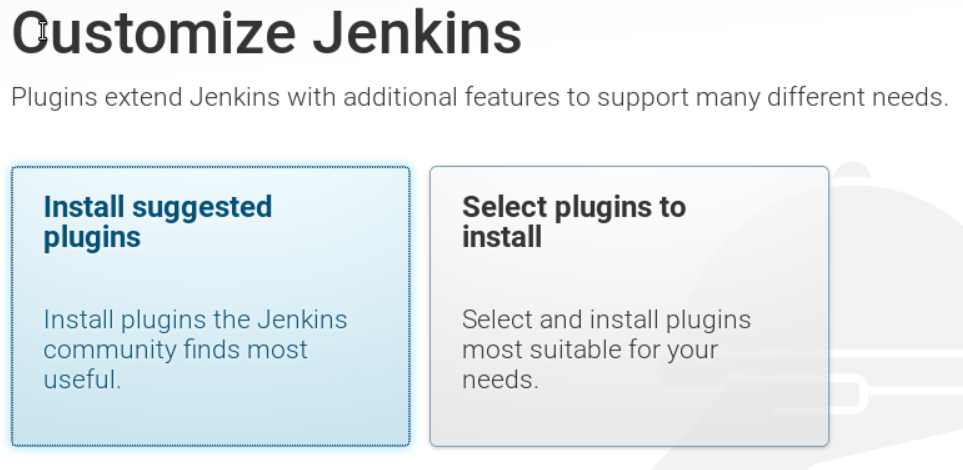
现在，坐等插件安装好:
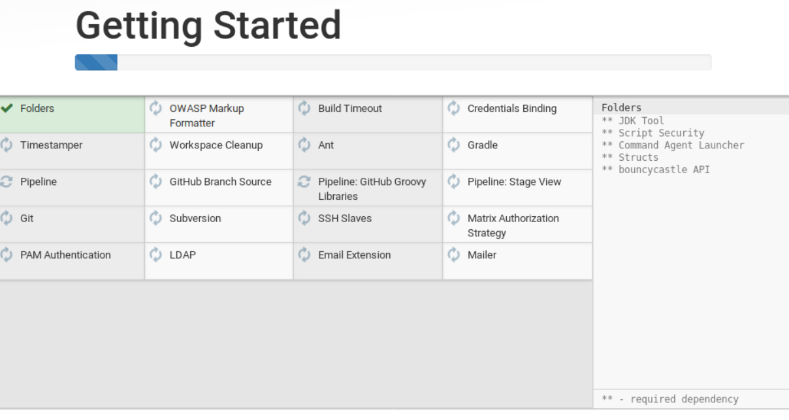
接下来，创建第一个管理员用户：
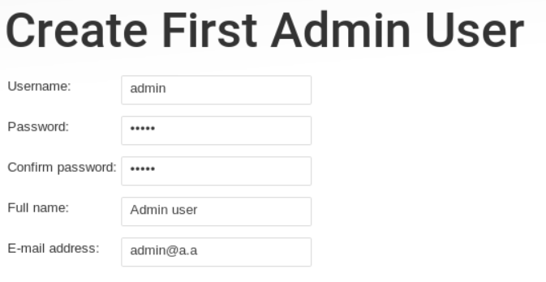
最后，配置 Jenkins 实例：
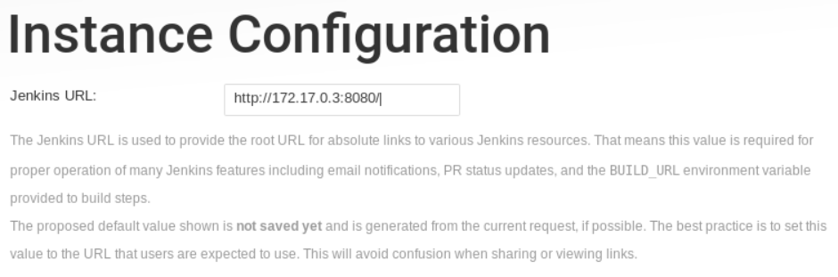
太棒了！Jenkins 现在已经准备好可以使用了:
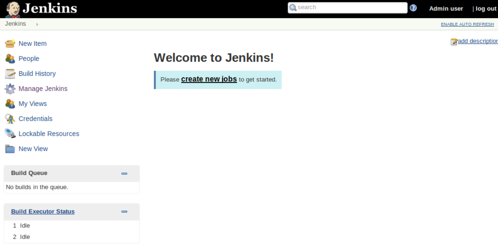
4.安装所需的工具
我们的构建需要在 Jenkins 中提供一些工具。我们需要 JDK11，Maven 和 Docker。在下一节中，我们将展示如何在容器中使用这些属性。
在启动容器期间，我们在容器中创建了 /var/jenkins_home/downloads 的挂载卷。首先，我们将验证是否可以从容器中访问此路径。执行以下命令：
$ docker exec -it myjenkins ls -l /var/jenkins_home/downloads
total 0
如上所述返回0个结果时，那么我们就可以继续了。否则，你必须检查在启动容器期间是否输入正确。
4.1 安装 JDK 11
我们将使用 Adopt OpenJDK 11，可在此处下载。我们必须将下载的 *.tar.gz 文件复制到已安装在主机上的卷 jenkins_home/downloads 中。为了检索我们机器上的路径，我们再次执行 docker inspect 命令，就像以前检索Jenkins IP地址一样。这一次，转到分段 Mounts：
"Mounts": [
...
{
"Type": "volume",
"Name": "jenkins_downloads",
"Source": "/var/lib/docker/volumes/jenkins_downloads/_data",
"Destination": "/var/jenkins_home/downloads",
...
}
],
在我们的示例中，卷位于 /var/lib/docker/volumes/jenkins_downloads/_data 上。将 *.tar.gz 文件复制到此位置。
跳转到 Manage Jenkins – Global Tool Configuration 和 *JDK 安装部分*。单击 Add JDK 按钮。默认情况下，java.sun.com 会添加安装程序。我们不会使用这个，所以删除它并添加一个 Extract *.zip/*.tar.gzinstaller。根据下面的屏幕截图填写字段。二进制存档的路径是 file:/var/jenkins_home/downloads/OpenJDK11U-jdk_x64_linux_hotspot_11.0.1_13.tar.gz。Label 留空是很重要的；否则，JDK的安装将失败。
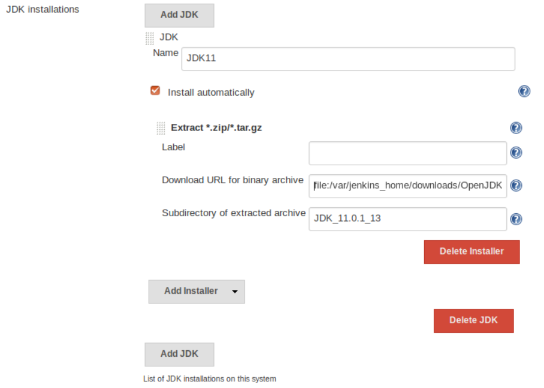
跳转到 *Manage Jenkins – Configure System*，到 Global properties 部分并启用 *环境变量*。为其添加环境变量 JAVA_HOME 并填充路径 /var/jenkins_home/tools/hudson.model.JDK/JDK11/jdk-11.0.1+13。
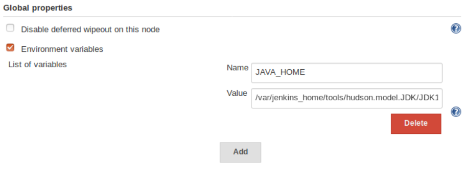
4.2 安装 Maven
我们将使用 Maven 3.6.0，可以在这里下载。安装过程与 JDK 安装相同：下载 *.tar.gz 文件并将其复制到 jenkins_home/downloads。
转到 Manage Jenkins – Global Tool Configuration 和 Maven 安装部分。单击 Add Maven 按钮。默认情况下，Apache 会添加安装程序。我们不会使用这个，所以删除它并添加一个 Extract *.zip/*.tar.gzinstaller。根据下面的屏幕截图填写字段。二进制存档的路径是 file:/var/jenkins_home/downloads/apache-maven-3.6.0-bin.tar.gz。Label 留空是很重要的；否则，Maven 的安装将失败。将子目录设置为 apache-maven-3.6.0 也很重要；否则，Maven 主目录没有正确设置，mvn 可执行文件将无法找到。
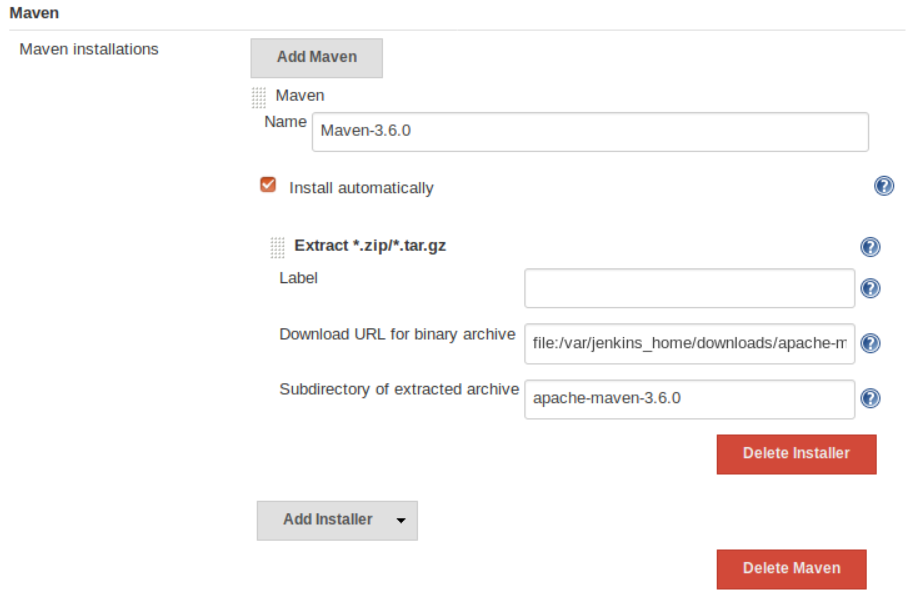
4.3 配置 Docker
在 Docker 内部安装 Docker 不是一个好主意，请参阅本文。因此，我们将使用宿主机的 Docker 安装，并将宿主机的 Docker 套接字挂载到容器。实际上，这也不是一个好主意，但是对于我们的 Jenkins 实验环境来说，这是可以的，但是出于安全原因，永远不要以这种方式暴露 Docker 套接字。
我们删除现有的容器（这不是有害的，因为我们的所有数据都保存在我们的主机上，我们不会丢失任何数据），然后使用 -v /var/run/docker.sock:/var/run/docker.sock 重新启动容器。
$ docker rm myjenkins
$ docker run -p 8080:8080 --name myjenkins -v /var/run/docker.sock:/var/run/docker.sock -v jenkins_home:/var/jenkins_home -v jenkins_downloads:/var/jenkins_home/downloads jenkins/jenkins:lts
为了使其工作，我们还必须设置 docker.sock 的权限给 jenkins 用户。默认情况下，它被挂载为 root，因此，由于 Permission Denied 错误，我们的构建将失败。
以 root 身份登录 Docker 容器:
$ docker exec -it -u root myjenkins
检查权限 docker.sock，这表明它拥有者 root：
$ ls -l /var/run/docker.sock
srw-rw---- 1 root 999 0 Jan 6 11:45 /var/run/docker.sock
让 jenkins 成为新所有者，并再次列出权限:
$ chown jenkins: /var/run/docker.sock
$ ls -l /var/run/docker.sock
srw-rw---- 1 jenkins jenkins 0 Jan 6 11:45 /var/run/docker.sock
现在，jenkins 是所有者，我们不会再得到 Permission Denied 的错误。
为了将 Docker 镜像推入 Docker registry，我们需要通过 settings.xml 将凭据提供给 Maven。我们可以通过配置文件提供程序插件轻松地提供 settings.xml。去 Manage Jenkins – Manage plugins 并安装插件(不重启安装)。
转到 *Manage Jenkins – Managed files*，然后单击 *Add a new Config*。创建 Global Maven settings.xml 并使用 DockerHub 帐户凭据添加以下部分：
<servers>
<server>
<id>docker.io</id>
<username>docker_username</username>
<password>docker_password</password>
</server>
</servers>
5.创建构建工作
最后要做的是创建我们的构建工作。转到 Jenkins CI 主页，然后单击 *New Item*。我们将把构建工作命名为 *MyKubernetesPlanet*，并选择一个 *Freestyle Project*。
在构建工作的配置部分，我们转到 Source Code Management 部分，并填写 Git URL https://github.com/mydeveloperplanet/mykubernetesplanet.git 和 branch */feature/jenkinsci。
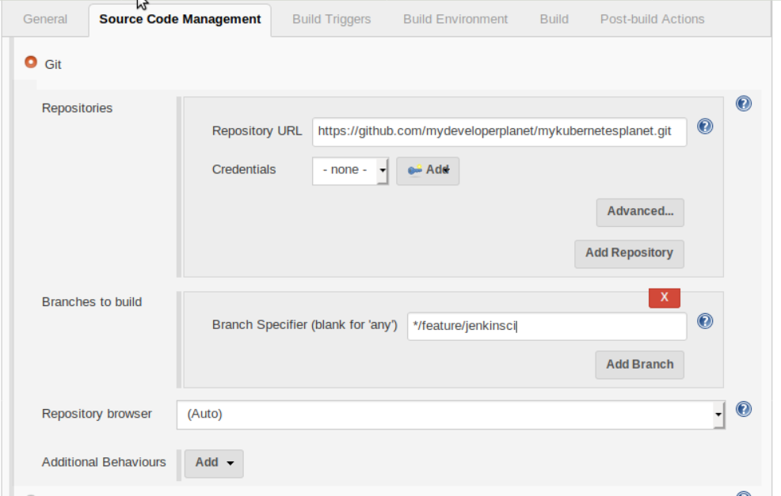
在 Build 部分，我们添加了一个 Invoke top-level Maven targets 的构建步骤。我们将调用以下 Maven 目标来构建我们的应用程序并将 Docker 镜像推送到 Docker registry：
$ clean install dockerfile:push
我们还需要设置之前创建的 Maven版本 和 *全局配置文件*。
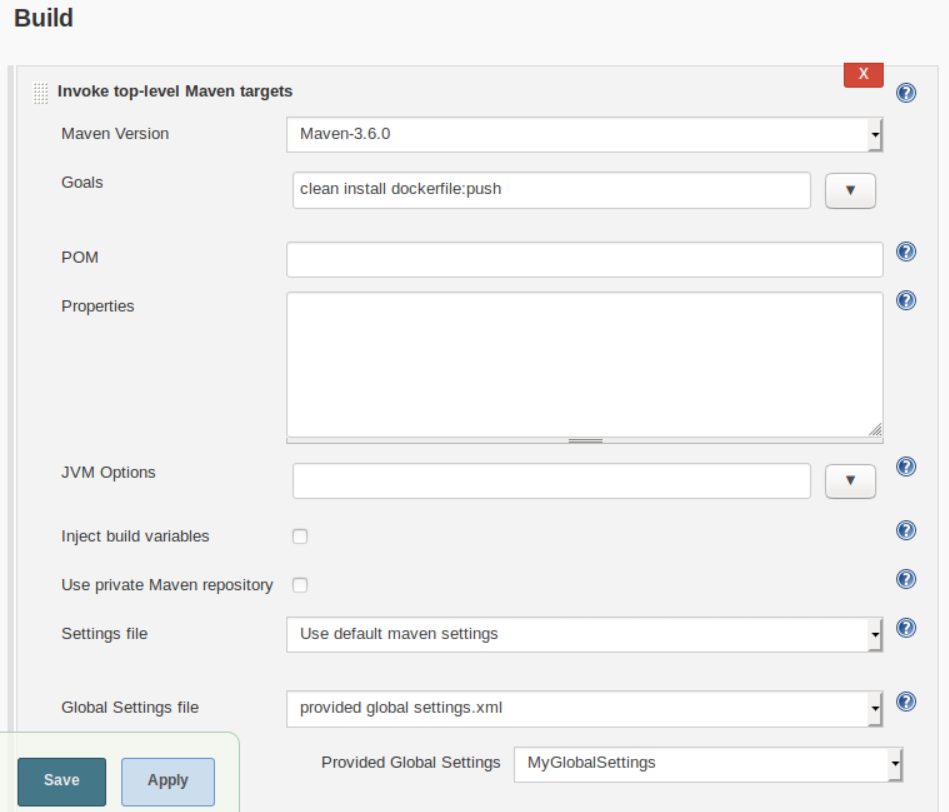
手动为我们的工作启动构建，这将创建 jar 文件，创建我们的 Docker 镜像，并将其推送到 Docker registry。
6.结论
在本文中，我们提供了一种让 Jenkins 实例运行的快速方法，包括执行 Maven 构建、创建 Docker 镜像并将其推入 Docker registry 的构建作业。请注意，这不是一种安全的方法，但是对于实验用例来说，它并没有太大的危害。现在我们已经有了一个完全运行的 Jenkins 实例，我们可以使用它来测试新的 Jenkins 插件。